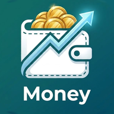

ບໍລິຫານເງິນ
ວິທີຕິດຕັ້ງ ແລະ ໃຊ້ງານ
🤖 Android — ຕິດຕັ້ງແອັບ (ແນະນຳ)
ແອັບ Android ບັນທຶກ ຮັບ/ຈ່າຍ ໃຫ້ເອງ ເມື່ອແອັບທະນາຄານແຈ້ງເຕືອນ.
📲 ດາວໂຫຼດແອັບ (money-app.apk)- ກົດປຸ່ມຂ້າງເທິງ ແລ້ວລໍຖ້າດາວໂຫຼດແລ້ວ ກົດ ເປີດ (Open).
- ຖ້າໂທລະສັບຖາມ "ອະນຸຍາດໃຫ້ຕິດຕັ້ງແອັບຈາກແຫຼ່ງນີ້?" → ກົດ ການຕັ້ງຄ່າ → ເປີດ ອະນຸຍາດ → ກັບມາກົດ ຕິດຕັ້ງ.
- ຖ້າຂຶ້ນ "Risk detected / ກວດພົບຄວາມສ່ຽງ" → ກົດ ລາຍລະອຽດ (Risk details) → ຕິດຕັ້ງຕໍ່ (Install anyway).
- ເປີດແອັບ → ເລືອກພາສາ → ສະໝັກໃໝ່: ໃສ່ຊື່, ເບີໂທ ແລະ ລະຫັດຜ່ານ (ຢ່າງໜ້ອຍ 8 ຕົວ).
- ກົດປ້າຍ ⚡ ເປີດບັນທຶກອັດຕະໂນມັດ → ຊອກ ບໍລິຫານເງິນ → ເປີດສະວິດ → ກົດ ອະນຸຍາດ → ກັບມາແອັບ.
- ສຳເລັດ ✅ ເວລາເງິນເຂົ້າ/ອອກຈາກ BCEL One, LDB, M-Money, U-Money ຫຼື IB Cool ຈະຖືກບັນທຶກເອງ.
ແອັບບໍ່ບັນທຶກເອງ (Xiaomi, OPPO, vivo, Samsung)
ບາງຍີ່ຫໍ້ປິດແອັບທີ່ເຮັດວຽກຢູ່ເບື້ອງຫຼັງເພື່ອປະຢັດແບັດ. ໄປທີ່ ການຕັ້ງຄ່າ → ແອັບ → ບໍລິຫານເງິນ → ແບັດເຕີຣີ → ເລືອກ ບໍ່ຈຳກັດ (No restrictions). ຢູ່ Xiaomi ໃຫ້ເປີດ ເລີ່ມອັດຕະໂນມັດ (Autostart) ນຳ.
ອັບເດດແອັບແນວໃດ?
ດາວໂຫຼດຈາກປຸ່ມດຽວກັນນີ້ ແລ້ວຕິດຕັ້ງທັບໄດ້ເລີຍ — ຂໍ້ມູນບໍ່ຫາຍ. ຖ້າໂທລະສັບເປີດໄຟລ໌ເກົ່າ ໃຫ້ລຶບ money-app.apk ເກົ່າໃນ Downloads ກ່ອນ.
🍎 iPhone (ແລະ ຄອມພິວເຕີ) — ໃຊ້ຜ່ານເວັບ
🌐 ເປີດ pmoney-app.github.io- ເປີດລິ້ງຂ້າງເທິງດ້ວຍ Safari.
- ກົດປຸ່ມ ແບ່ງປັນ (ສີ່ຫຼ່ຽມມີລູກສອນຂຶ້ນ) → ເພີ່ມໃສ່ໜ້າຈໍໂຮມ (Add to Home Screen) → ເພີ່ມ.
- ເປີດໄອຄອນ ບໍລິຫານເງິນ ທີ່ໜ້າຈໍ → ສະໝັກດ້ວຍຊື່, ເບີໂທ ແລະ ລະຫັດຜ່ານ.
- ກົດ ＋ ເພື່ອບັນທຶກ ຮັບ/ຈ່າຍ. (iPhone ບໍ່ອະນຸຍາດໃຫ້ແອັບອ່ານແຈ້ງເຕືອນທະນາຄານ, ຈຶ່ງຕ້ອງບັນທຶກເອງ)
🔒 ປອດໄພບໍ່?
ແອັບອ່ານຫຍັງແດ່?
ອ່ານສະເພາະແຈ້ງເຕືອນຈາກ 5 ແອັບ: BCEL One, LDB, M-Money, U-Money ແລະ IB Cool. ແຈ້ງເຕືອນຈາກແອັບອື່ນ (WhatsApp, Facebook, SMS...) ບໍ່ຖືກອ່ານ ແລະ ບໍ່ຖືກສົ່ງອອກຈາກໂທລະສັບ.
ໃຜເຫັນຂໍ້ມູນຂອງຂ້ອຍ?
ສະເພາະທ່ານ. ລະບົບແຍກຂໍ້ມູນຂອງແຕ່ລະຄົນ — ຜູ້ໃຊ້ຄົນອື່ນເບິ່ງບໍ່ໄດ້. ຂໍ້ຄວາມແຈ້ງເຕືອນເຕັມຈະຖືກລຶບອັດຕະໂນມັດຫຼັງ 90 ວັນ (ຈຳນວນເງິນ ແລະ ໝວດຍັງຢູ່).
ລະຫັດຜ່ານຂອງຂ້ອຍ
ລະຫັດຖືກເຂົ້າລະຫັດໄວ້ — ແມ່ນແຕ່ຜູ້ດູແລກໍອ່ານບໍ່ໄດ້. ແອັບບໍ່ຈື່ລະຫັດ: ທຸກຄັ້ງທີ່ເປີດແອັບໃໝ່ຕ້ອງໃສ່ລະຫັດ. ປ່ຽນລະຫັດໄດ້ທີ່ ຕັ້ງຄ່າ → ປ່ຽນລະຫັດຜ່ານ.
ລືມລະຫັດຜ່ານ?
ກົດ ລືມລະຫັດຜ່ານ? ໃນໜ້າເຂົ້າສູ່ລະບົບ ແລ້ວຕິດຕໍ່ຜູ້ດູແລ. ທ່ານຈະໄດ້ລະຫັດຊົ່ວຄາວ ແລະ ລະບົບຈະໃຫ້ຕັ້ງລະຫັດໃໝ່ທັນທີ.
ຢາກລຶບບັນຊີ
ຕິດຕໍ່ຜູ້ດູແລລະບົບ ພ້ອມເບີໂທທີ່ສະໝັກ — ບັນຊີ ແລະ ຂໍ້ມູນທັງໝົດຈະຖືກລຶບຖາວອນ.